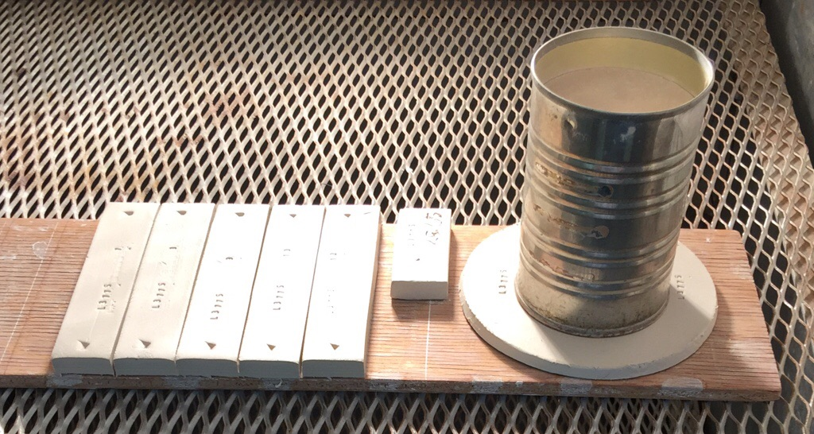
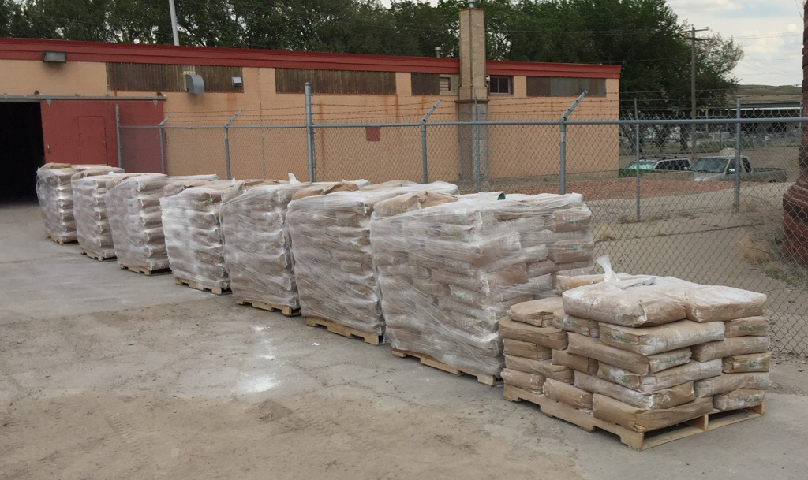
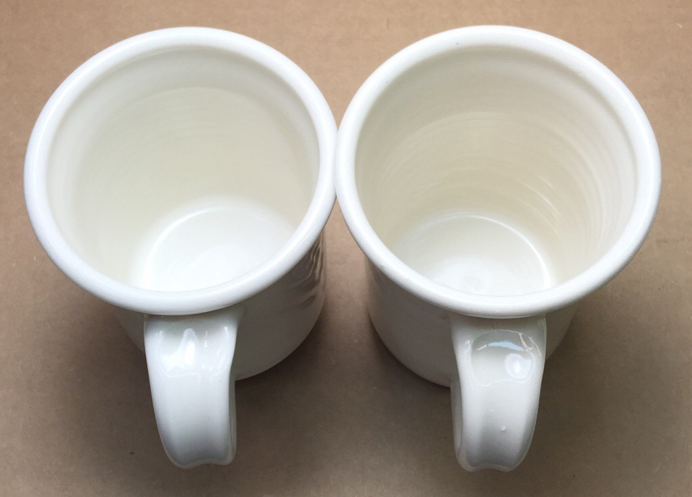
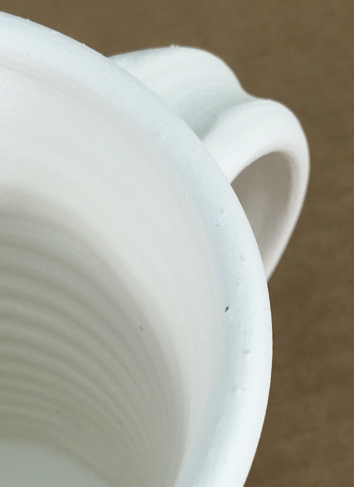
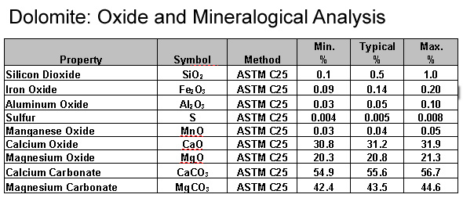

Introduction
The study of ceramic materials is at the center of all ceramic technology. While knowing the chemistry of materials gives you much control of fired the properties of glazes, knowing the physical and fired properties of materials enables control of both fired and unfired properties of bodies (and of course of the physical and working properties of glaze slurries). In education students study theoretical materials, in industry we work directly with real-world materials, we can see them and touch them. These materials normally come in bags, they are powders and we understand their properties from this view (not from the rocks they once were in a quarry). They have plasticities, melting temperatures, particle size distributions, vitrification histories, solubility or solubles contents, impurities, consistency issues, rheological properties, bulk densities, particle surface areas, costs, etc.
Materials science needs to be put into context with all the levels of assessment: oxide, mineral, material, recipe and process. For example, consider the problem of ware cracking during drying, a body issue (not likely related to chemistry). The problem could be as simple as ware being dried unevenly, a process level problem. If the cracking is occurring because the body has been formulated with too much ball clay to make it practical to dry, that is a recipe level issue. If the cracking is occurring because one material has changed or been substituted, perhaps to a much smaller particle size alternative, that is a material level issue. If the cause of the problem is difficult to asses, then the mineralogy of the ingredient materials and their interactions may need to be studied and understood better to solve the problem.
In many cases the causes of a problem have roots on multiple levels. Amazingly, this affords the opportunity to link apparently separate problems occurring on multiple levels and solve them all at once. Consider the issue of a glaze slurry that is settling quickly, powdering after drying and failing to adhere well to ware, these are happening because of lack of clay content. This problem is probably directly related to the fact that the glaze is also running off ware during firing (likely due to lack of Al2O3 and SiO2 in the glaze). Adding kaolin (which supplies both) will help suspend and harden the glaze and it will help stabilize it during firing, solving all the problems. In addition the glaze will also be more durable and less soluble.
In this materials area of the database we avoid discussing too much about chemistry, this is done in the oxides area. For example, on the material level we see kaolin as clay powder that contributes plasticity to a body and suspension properties to a glaze (while of course contributing Al2O3 and SiO2 to the chemistry of the glaze and a mullite building source to the body). On the mineral level it is kaolinite, its properties compare to other clays in relation to its particle size and shape, surface chemistry on the particles, etc. On the chemistry level it is no longer kaolin, it is Al2O3 and SiO2, therefore studying its effects on glazes involves studying these two oxides. However there a limitations to this 'materials as chemistry sources' view, different materials of the same chemistry do not release their oxides into a melt with the same willingness. These differences can be answered on the mineral level.
The concept of distinguishing between generic materials and name-brand materials enables maintaining general information in fewer places. For example, all generic information about kaolin can be found in the generic kaolin record. Other name-brand kaolins are linked to the generic kaolin as their parent and only information specific or unique to them is recorded there. Generic kaolin is, in turn, linked to the mineral kaolinite.
If you have studied or compared data sheets over a period of time then you know how many errors they can have, how unclear they can be, how non-applicable or non-practical their data is for ceramic applications and how drastically numbers can change as companies update them. This underscores the importance of being able to test these materials for yourself to know the behaviour for specific properties that relate to your application.
Links
| Glossary |
Ceramic Material
Ceramic materials are employed in the ceramic industry to make glazes, bodies, engobes and refractories. We study them at the mineral, chemical and physical levels. |
| Glossary |
Theoretical Material
In glaze chemistry, theoretical materials are used to represent what a material would be if it was uncontaminated and perfectly crystallized |
| Glossary |
Physical Testing
In ceramics, glazes, engobes and bodies have chemistries and physics. Your formulation and quality control most likely need to focus on the physical properties. |
| Articles |
Chemistry vs. Matrix Blending to Create Glazes from Native Materials
Is it better to do trial and error line and matrix blending of materials to formulate glazes or is it better to use glaze chemistry right from the start? |
| Articles |
Particle Size Distribution of Ceramic Powders
Understanding the theory behind sieve selection, how to properly sample a powder and how to carry out a particle size distribution test can give you valuable information about a material. |
| Articles |
How to Find and Test Your Own Native Clays
Some of the key tests needed to really understand what a clay is and what it can be used for can be done with inexpensive equipment and simple procedures. These practical tests can give you a better picture than a data sheet full of numbers. |
| Hazards |
Overview of Material Safety by Gavin Stairs
Toxicology and ceramic materials is a complex subject, what materials and methods pose the greatest dangers, which are the safest? |
| Materials |
Kaolin
The purest of all clays in nature. Kaolins are used in porcelains and stonewares to impart whiteness, in glazes to supply Al2O3 and to suspend slurries. |
Lab testing a clay for its physical properties

This picture has its own page with more detail, click here to see it.
It only takes a few minutes to make these. But you would be amazed at how much information they can give you about a clay! These are SHAB test bars, an LDW test for water content and a DFAC test disk about to be put into a drier. The SHAB bars shrink during drying and firing, the length is measured at each stage. The LDW sample is weighed wet, dry and fired. The tin can prevents the inner portion of the DFAC disk from drying and this sets up stresses that cause it to crack. The nature of the cracking pattern and its magnitude are recorded as a Drying Factor. The numbers from all of these measurements are recorded in my account at Insight-live. It can present a complete physical properties report that calculates things like drying shrinkage, firing shrinkage, water content and LOI (from the measured values).
Refined 200 mesh materials are not guaranteed to be such

This picture has its own page with more detail, click here to see it.
Each of these eight pallets of kaolin are being sampled to screen them for oversize particles. The 50 gram samples needed can be taken without having to open the bags, they are filled through a valve at the top and it can be opened easily. Kaolins and ball clays especially are suspect and body manufacturers must be vigilant about this (each can tell you disaster stories about making product with faulty raw materials containing grit, carbon and iron particles). The samples will be washed through 70, 100 and 150 mesh screens to spot any particles that could introduce grit or fired speckle into the bodies.
Do not rely on material data sheets, do the testing

This picture has its own page with more detail, click here to see it.
The cone 6 porcelain on the left uses Grolleg kaolin, the right uses Tile #6 kaolin. The Grolleg body needs 5-10% less feldspar to vitrify it to zero porosity. It thus contains more kaolin, yet it fires significantly whiter. Theoretically this seems simple. Tile #6 contains alot more iron than Grolleg. Wrong! According to the data sheets, Grolleg has the more iron of the two. Why does it always fire whiter? I actually do not know. But the point is, do not rely totally on numbers on data sheets, do the testing yourself.
Lignite contamination in manufactured porcelain body

This picture has its own page with more detail, click here to see it.
These contaminating particles are exposed on the rim of a bisque-fired mug. The liqnite ones have burned away but the iron particle is still there (and will produce a speck in the glaze). Remnants of the lignite remain inside the matrix and can pinhole glazes. Since ball clays are air floated (a stream of air takes away the lighter particles and the heavier ones recycle for regrinding) it seems that contamination like this would be impossible. But the equipment requires vigilance for correct operation, especially when there is pressure to maximize production. Ores in Tennessee are higher in coal than those in Kentucky. North American clay body manufacturers who confront ball clay suppliers with this contamination find that ceramic applications have become a very small part of the total ball clay market - complaints are not taken with the same seriousness as in the past.
When both mineralogy and chemistry are shown on a data sheet

This picture has its own page with more detail, click here to see it.
Some material data sheets show both the oxide and mineralogical analyses. Dolomite, for example, is composed of calcium carbonate and magnesium carbonate minerals, these can be separated mechanically. Although this material participates in the glaze melt to source the MgO and CaO (which are oxides), it's mineralogy (the calcium and magnesium carbonates) specifically accounts for the unique way it decomposes and melts.
Got a Question?
Buy me a coffee and we can talk 

https://digitalfire.com, All Rights Reserved
Privacy Policy